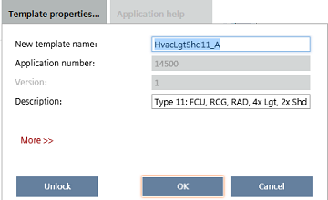
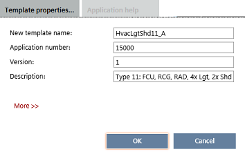

Unlocking application templates
Application numbers are used on the Apogee market to name application templates and lock application templates. They must be enabled in the application type to be active and visible. For application numbers to be visible, you must select the check box Show application number.
Number ranges
Locked templates
Apogee uses application numbers for HQ library templates in the range of 14000 to 14999. This application number range locks the templates. As a result, I/O configuration and application features cannot be changed.
Unlocked templates
Apogee uses application numbers for project-specific templates in the range of 15000 to 15999 (for changed HQ templates).
Unlock an application template
- The application number is in the range of 14000 to 14999.
- In Configuration > Application selection, select the template.
- Click Open template.
- Configuration > Application configuration opens.
- The icon displays after the template name.
- Click Template properties.
- The template properties display.

- Click Unlock.
- The entry fields for application number and version are unlocked.
- The application number changes automatically to 15000. The application template is unlocked.

- Change template properties as needed.
- Change application number (15000 to 15999). There is no check for unique application number.
- Change version.
- Click OK.
- The unlocked icon displays after the template name.